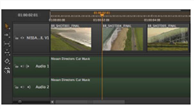
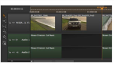

默认情况下, 插入 将剪辑查看器的整个内容放在时间线的当前播放头位置，在最低可用轨道上。播放头下游的所有剪辑实例都被波纹，为剪辑腾出空间。不会覆盖或删除任何项目。
|
 |
 |
| 预插入时间线 | 插入后时间线 |
注意:
如果播放头没有定位在编辑点，或者其他轨道上有剪辑实例，则
插入
动作在播放头处剪切剪辑实例，并使切口向下游波动。
例如，插入后图像显示音频剪辑实例被剪切和波纹，即使它不在同一轨道上。
如果不想以最低可用轨道为目标，可以在插入前选择轨道。即使目标轨迹为空，所有其他未锁定轨迹上的剪辑实例也会以相同的数量波纹。
还可以使用 “入” 和 “出” 点来控制插入片段的位置以及包含的帧数量。请参阅 3 点编辑 欲了解更多信息。
要在播放头插入剪辑:
| 1。 | 导航到 工作空间 > 编辑 显示 2 上查看器布局。 |
| 2. |
双击 bin 视图中的序列，将其加载到右侧的序列查看器中
|
| 3. |
双击源剪辑将其加载到左侧剪辑查看器中
|
| 4. | 如果需要，将播放头放置在所需的编辑点或时间码上，并选择目标轨道。 |
| 5. | 导航到 剪辑 > 插入 ,或按 N ,将剪辑插入时间轴。 |
剪辑下游的所有剪辑实例都被波纹，以在编辑期间腾出空间。
要在输入或输出点插入剪辑，请执行以下操作:
| 1. | Navigate to Workspace > Editing to display the 2-up Viewer layout. |
| 2. |
Double-click your sequence in the bin view to load it into the right-hand sequence Viewer
|
| 3. |
Double-click the source clip to load it into the left-hand clip Viewer
|
| 4. | 在时间轴上放置一个 “入” 或 “出” 点以确定剪辑的位置: |
• 在点 -插入源剪辑，以便第一帧位于指定的插入点。
• 出点 -插入源剪辑，以便最后一帧位于指定的输出点。
| 5. | Navigate to Clip > Insert , or press N , to insert the clip into the timeline. |
入点或出点下游的所有剪辑实例都被波纹，以在编辑期间腾出空间。
|
|